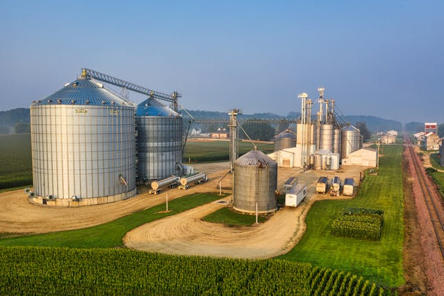
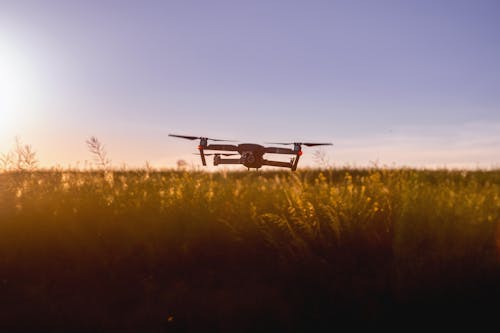

Empreendedorismo
O empreendedorismo rural desempenha uma função essencial na geração de alimentos e matérias-primas. Os agricultores e pecuaristas enfrentam desafios cotidianos, como as alterações climáticas, o uso de tecnologias agrícolas e a necessidade de uma gestão eficaz. Ademais, a agroindústria no meio rural é responsável por processar e transformar essas matérias-primas em produtos finais, incluindo laticínios, carnes processadas e óleos vegetais.
A conexão entre o campo e a cidade é clara em várias dimensões como no abastecimento e consumo onde as áreas rurais fornecem alimentos, fibras e matérias-primas para as cidades. Os grãos cultivados no campo são consumidos nas áreas urbanas, enquanto a carne produzida pela pecuária abastece os mercados das cidades, na transferência de tecnologias onde as inovações que surgem nas zonas urbanas trazem benefícios para o campo. Tecnologias como drones, sensores e sistemas de irrigação inteligente podem ser implementadas na agricultura, contribuindo para aumentar a eficiência e a produtividade ou no mercado e distribuição onde as cidades atuam como centros de mercado, distribuindo produtos provenientes do campo aos consumidores e vice-versa. A logística e a cadeia de suprimentos estabelecem a conexão entre esses dois ambientes.
Nas áreas urbanas, os empreendedores atuam nos setores de comércio, serviços e indústrias. Eles abrem lojas, restaurantes, salões de beleza, escritórios de advocacia e diversas outras iniciativas. Além disso, as cidades são pontos de concentração de talentos e recursos voltados para a inovação tecnológica. Nesse contexto urbano, startups, incubadoras e aceleradoras se tornaram bastante comuns.